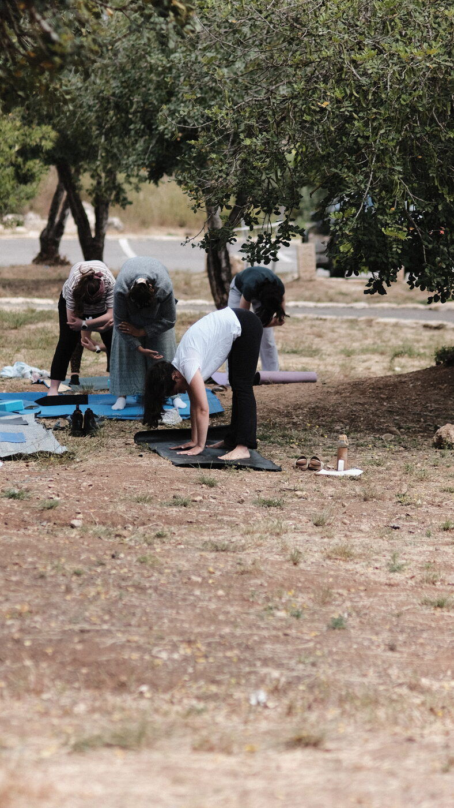
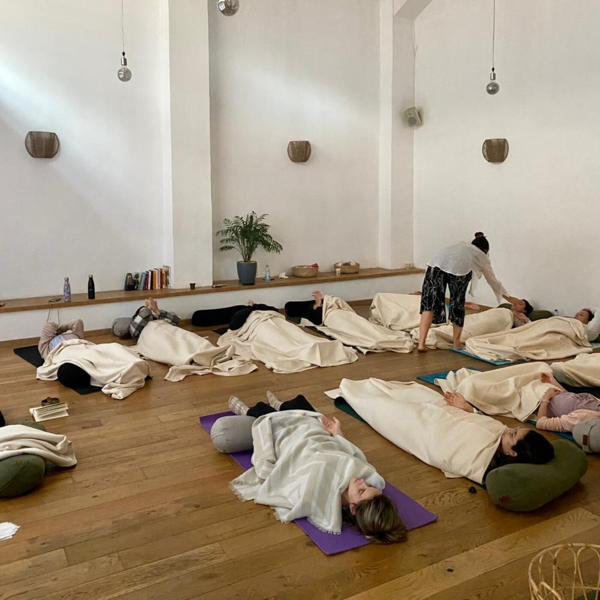
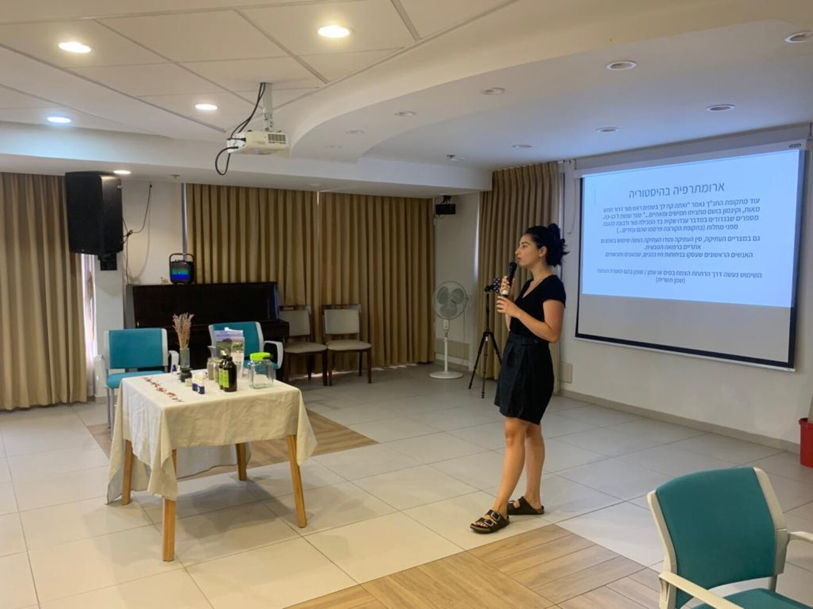

האטה יוגה
סגנון מדויק ועדין, המתאים לכל גיל ורמה. בתרגול הפיזי התנוחות מתבצעות בקצב איטי, תוך הקשבה לגוף והעמקת המודעות. הדגש הוא על יציבה נכונה, גמישות, חיזוק והרפיה, בשילוב טכניקות נשימה מודעת.
דרך עתיקה המשלבת תנועה, נשימה מודעת ומדיטציה, לחיבור עמוק בין הגוף והנשמה. בשבילי, יוגה היא ממש לא ״עוד אימון כושר״ — זה המקום שבו לומדים להשקיט את המחשבות, לחבר בין הגוף לנפש, ולגלות שאפשר לפעול ולהתקדם בעולם גם מתוך הרפיה.


סגנון מדויק ועדין, המתאים לכל גיל ורמה. בתרגול הפיזי התנוחות מתבצעות בקצב איטי, תוך הקשבה לגוף והעמקת המודעות. הדגש הוא על יציבה נכונה, גמישות, חיזוק והרפיה, בשילוב טכניקות נשימה מודעת.

משלבת את חכמת היוגה העתיקה עם הבנה מעמיקה של הגוף. מתאימה במיוחד למתמודדות עם כאבים, מתח, חרדה או אתגרים פיזיים ורגשיים אחרים. כל מפגש מותאם לצרכים האישיים של המתרגלת.

קבוצה קבועה של תרגול בישיבה על כיסא: תנועה עדינה, נשימה וחיזוק — בקצב שמתאים לגוף, בלי לרדת לרצפה. מתאים גם למועדונים, לבתי אבות ולדיור מוגן.

כמטפלת הוליסטית מנוסה, אני מביאה לתרגול היוגה ראייה רחבה ומעמיקה של הגוף והנפש. שילוב הידע המקצועי שלי מעולם הרפואה הטבעית מאפשר לי להתאים את התרגול באופן מדויק לצרכים האישיים שלך.
בין אם את מתמודדת עם כאבים כרוניים, מתח נפשי, אתגרים רגשיים או פשוט מחפשת דרך להעמיק את הקשר עם עצמך — תרגול מותאם אישית המשלב את חכמת היוגה זה הפתרון בשבילך.
על מה נעבוד יחד: שיפור היציבה והגמישות · הפחתת מתחים וכאבים · העמקת הקשר בין הגוף והנפש · למידת כלים לאיזון והרגעה · פיתוח תרגול אישי מותאם לך.
התרגולים הפרטניים מיועדים לנשים בלבד. הם מתקיימים באזור עמק האלה — אצלי או בבית המתרגלת — וגם בקליניקה שלי בתל אביב. התרגול הוא מרחב בטוח ומכיל לצמיחה אישית.
לקבוצות חברות המחפשות חוויה משותפת ומחברת, לריטריטים ואירועים מיוחדים, ולחברות וארגונים המעוניינים בפעילות גיבוש. התרגול מותאם לרמת הקבוצה, עם טכניקות נשימה ומדיטציה וכלים להתמודדות עם מתח יומיומי — ואפשרות לשילוב סדנת ארומתרפיה.
לסדנאות לקבוצות